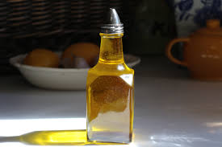

Este requiere ser almacenado
- 1.El aceite recalentado varias veces
genera toxinas que perjudican
seriamente nuestra salud.
- 2.Obstruye los desagües. Se solidifica y
adhiere a las paredes de las cañerías de
los domicilios y en la red general del
municipio, provocando atascos
- 3.Alimenta ratones, facilitando su
reproducción
- 4.Facilita la reproducción de bacterias, lo
que incide grave y directamente en
nuestra salud
- 5.Afecta a las depuradoras, dificultando su
funcionamiento y disminuyendo la vida
media de este tipo de
instalaciones.
- 6.Repercute negativamente en el
ciclo del agua y en el desarrollo
de la vida en los ríos y mares. El
aceite se adhiere a las agallas de
los peces y crea una capa en la
superficie del agua que impide su
correcta oxigenación, en
definitiva altera el ecosistema.
{{ title }}
InfoWindow content